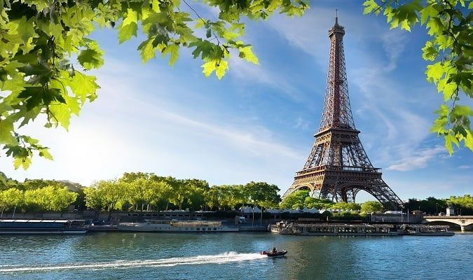
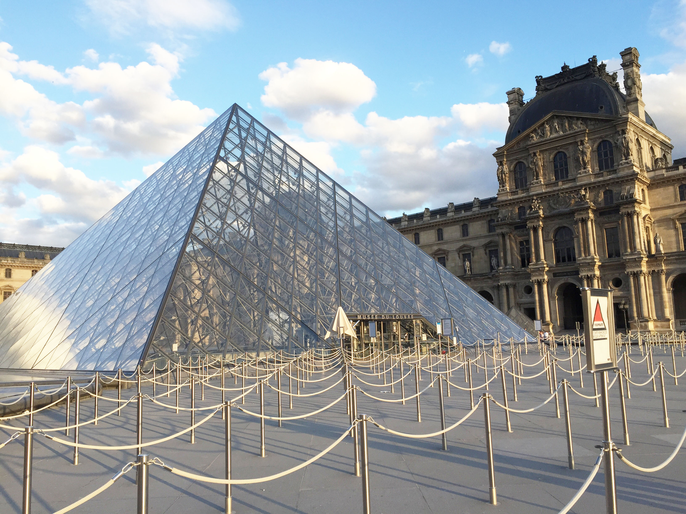

Torre-eifel

A Torre Eiffel é uma grande torre que está localizada no Campo de Marte (Champ de Mars), em Paris, França. O monumento tornou-se um ícone da cidade, do país e da Europa, o qual recebe milhões de visitantes todos os anos.
Champs-elysees
 Com uma extensão de quase dois quilômetros, a Champs Élysées (Campos Elíseos) forma a via mais bonita e conhecida de Paris, além de ser uma das avenidas mais famosas do mundo.
Com uma extensão de quase dois quilômetros, a Champs Élysées (Campos Elíseos) forma a via mais bonita e conhecida de Paris, além de ser uma das avenidas mais famosas do mundo.
Museu do Louvre

Louvre ou Museu do Louvre em francês: Musée du Louvre) é o maior museu de arte do mundo e um monumento histórico em Paris, França. Um marco central da cidade, está localizado na margem direita do rio Sena, no 1º arrondissement (distrito) da cidade. Aproximadamente
38 mil objetos, da pré-história ao século XXI, são exibidos em uma área de 72 735 metros quadrados.